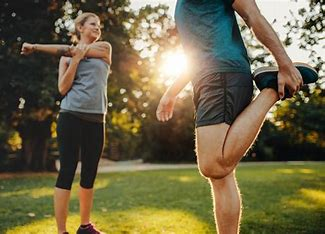

Adotar hábitos saudáveis não apenas melhora a sua saúde física e mental, mas também influencia positivamente diversos aspectos da sua vida, promovendo um maior bem-estar e felicidade a longo prazo em todos pilares da vida.
Consumir uma variedade de alimentos nutritivos, como frutas, vegetais, grãos integrais, proteínas magras e gorduras saudáveis, em porções adequadas.
Praticar atividades físicas regularmente, como caminhar, correr, nadar, fazer yoga ou qualquer outra atividade que você goste, para promover a saúde cardiovascular, fortalecer músculos e melhorar o humor.
Beber bastante água ao longo do dia para manter o corpo hidratado e apoiar funções corporais importantes.
Praticar técnicas de gerenciamento do estresse, como meditação, respiração profunda, exercícios de relaxamento ou hobbies que proporcionem prazer e alívio do estresse.
O sono regular fortalece o sistema imunológico, reduzindo o risco de doenças, melhora o humor, a capacidade cognitiva e o desempenho acadêmico e profissional. Além disso, contribui para a recuperação muscular, regulação emocional e melhoria geral da qualidade de vida.